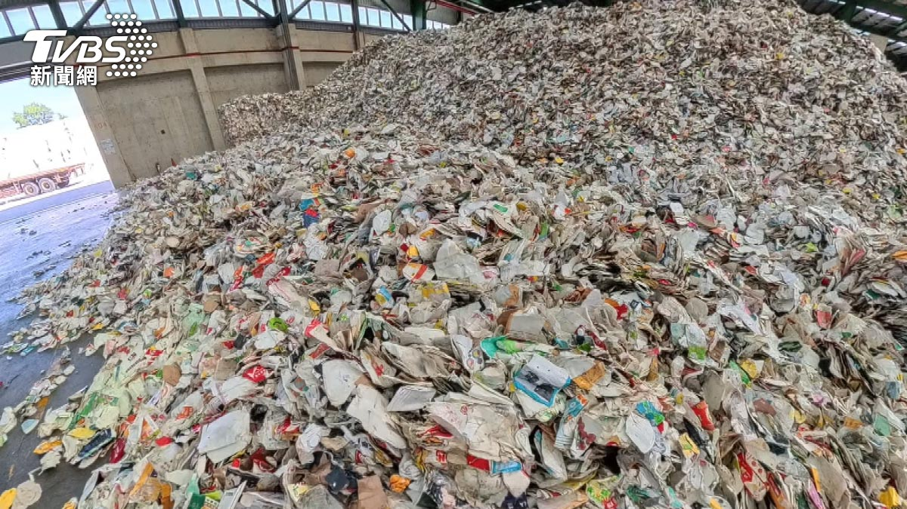
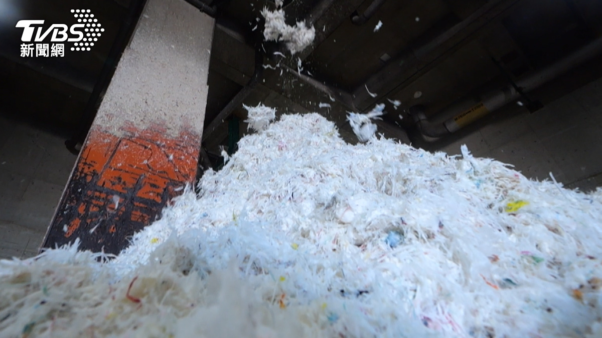
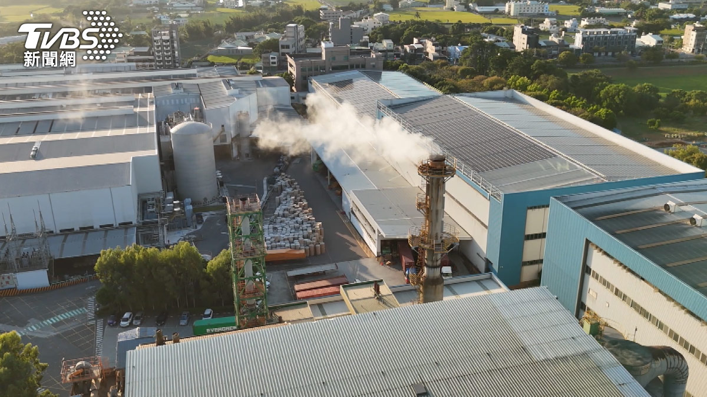
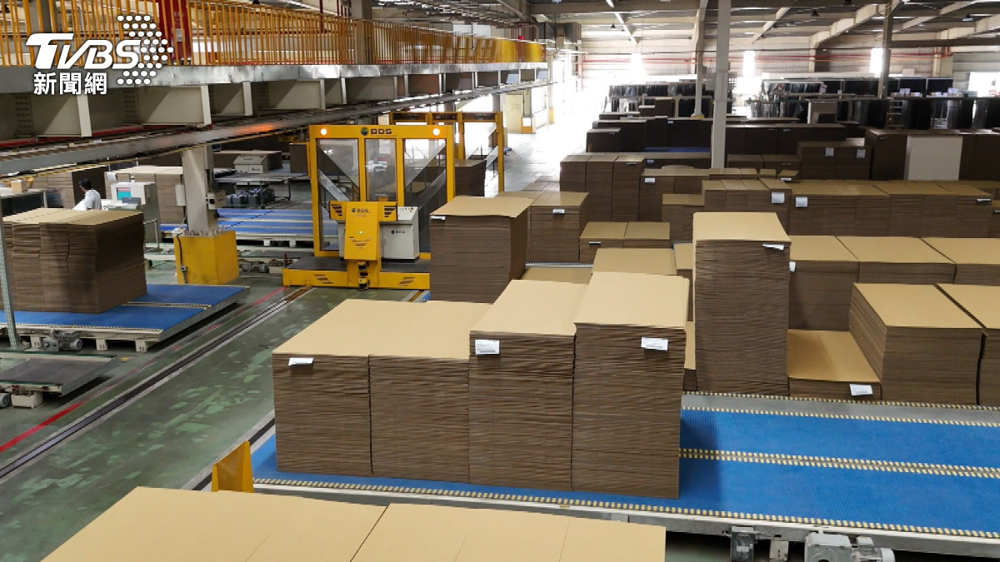

◎ 報導／劉彥萱
◎ 攝影／黃冠瑋
◎ 責任編輯／新聞中心
◎ 發布日期／2025.11.20
◎ 更新日期／2026.08.20

動動手指，美食外送立刻送上門，不過每次用完餐後，桌上總會留下滿滿紙盒、紙碗、紙杯，這些外帶紙容器最後都到哪裡去了？

▲ 紙容器內的塑膠淋膜物盡其用。（圖／TVBS）
來到全台最大的廢紙容器再生處理廠，現場堆置著六、七百噸用過的紙杯、紙餐盒。這些表面塗有塑膠淋膜的紙容器，曾是回收紙廠的大麻煩，但現在業者透過淋膜紙處理系統，做到紙塑分離，讓紙容器不再是垃圾，得以被有效利用。
廢紙容器堆積如山，全台一年消耗超過八十億個。每批進入廠區的廢紙容器，都要經過嚴格稽核與檢測，留下符合再生標準的回收原料，確保純度與品質。
分類後的紙容器經輸送帶送入大型散漿機，利用水將紙纖維與淋膜徹底分離。造紙公司大園廠副課長劉立文指出，分散後的漿料經加壓浮除系統清洗，去除雜質與殘留漿料，留下乾淨紙漿，再送入漿板機進一步成型。同時，紙容器中的防油防水塑膠淋膜也能再利用，轉製成可發電的固體再生燃料，減少煤炭使用。造紙公司大園廠經理張子傑指出，這些替代燃料可取代製程中的部分煤炭，降低碳排放。
大園廠建立完整的紙容器再生處理一貫化產線，部分取代進口紙漿原料，降低產品碳足跡，廢紙容器年處理量達17.6萬公噸，足以消化全台超過一半的回收量。廠長陳青山表示，如果沒有回收，廢紙容器將產生更多廢棄物，目前廠區每月回收約六千噸，產能利用率達五至六成，未來目標提升至七至八成。
在台中后里廠，造紙公司打造完善的紙容器循環再生體系，每年處理全台三成、一百萬公噸的回收紙，並導入AI管理推動能源轉型。至2025年10月，廠區共使用12.89萬噸替代燃料，減少4.76萬噸煤炭用量，碳排降低4.67萬噸二氧化碳當量。后里廠長陳志誠表示，每張廢紙回收使用率可達六到八次，並透過散漿機及IP設計提升效率，動力節省二成至二成五，以達到淨零減排。

▲ 造紙產業「轉廢為能」。（圖／TVBS）
造紙公司管理處協理吳文棧補充，后里廠設置全台最大的生質能氣電共生系統，每年可減少八萬多公噸煤炭使用量。致力於資源全循環，工業用紙回收利用率達97.7%，水資源循環率96.3%，廢棄物資源化率98%，每年持續投入綠能減碳，2024年較前一年減碳量達七萬公噸二氧化碳當量。
在彰化二林，另一家造紙廠將廢紙箱轉化為可持續再利用的資源。回收紙磚來自國內外，每塊約一至二噸，全年回收量高達386萬噸，最終成為造紙材料。原料包含寄送包裹用紙箱、大型搬家紙箱及市場蔬菜分裝箱，並混合使用來自美國、日本與菲律賓的不同纖維。永續辦公室經理林器暉表示，長纖維與短纖維在造紙製程上都是重要原料，因此從不同國家蒐集廢紙以做原料配料。
回收廢紙再生比傳統砍樹造紙減碳，每生產一噸紙可減碳5.3公斤。以去年的產量計算，相當於減碳二千萬噸，節省六千萬棵樹。專利技術使工業用紙99%以上由廢紙製成，搭配自動化設備，廢棄紙箱可直接投入生產。林器暉指出，最新超紙機搭配智慧設計，2024年碳排較2022年減少近二成。造紙業耗水量大，因此斥資近一億元設置廢水回收系統，每滴水可重複使用26次，廠區三座大型厭氧塔同時處理廢水與再生能源。林器暉說，厭氧塔將廢水中的有機物分解產生沼氣，用作燃料燃燒。

▲ 低碳紙箱。（圖／TVBS）
透過每個環節的設計，廠區每噸紙碳排量降低至0.7，並將鍋爐燃料從重油改為天然氣，碳排減少三成，空氣污染物排放降低七成。而紙箱廠引入大數據、機械手臂及無人車等自動化生產技術，已涵蓋70%生產範圍，未來將持續擴大應用。低碳造紙技術結合綠色設計，每款紙箱以減量化、循環化、智慧化為核心策略。永續辦公室主任溫立安表示，紙箱採一片式包裝一體成型設計，瓦楞紙折痕填滿空間，使零件運送過程不晃動。
造紙業正一步步推進綠色轉型，從原料供應、生產製程，到客戶端及廢棄物處理，每個環節都涉及碳排放。藉由打造減碳生態系，產業實現轉廢為能，邁向2050淨零目標。


新聞部
副總經理 王結玲
陳致中・陳詩璧・胡瑞麒・華子琛・談雍雍・吳家瑜
節目部
T觀點／莊開文・吳家瑋・莊秀惠・趙昱涵
數位事業部
總監 郭瀧億
內容策展組／廖玉貞・彭嘉儀・林佳瑤・李佳綺
ESG永續發展部
賴盈文・蔣成偉・張玲玲・黎育如・徐新瑜

© TVBS Media Inc. All Rights Reserved｜聯利媒體股份有限公司